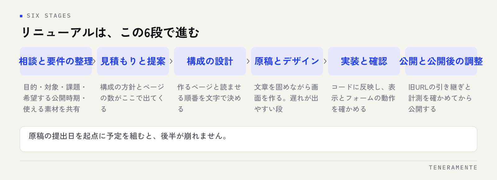

ホームページを作り直すと決めてから、実際に依頼して公開するまでには、決めることがいくつも並びます。結論から申し上げると、ホームページリニューアルの依頼でつまずくのは制作の途中ではなく、依頼する前に目的と範囲が決まっていない段階です。デザインの話から始めてしまうと、何をもって完成とするのかが最後まで決まりません。この記事では、依頼から公開までの流れを段に分け、見積もりで確認することと、自社側で先に決めておくことを順番に整理します。
📌 この記事の結論
リニューアルの依頼は、作り直す理由を1つに絞るところから始めてください。目的が1つ決まると、引き継ぐページ、捨てるページ、見積もりで確認する項目が自動的に決まります。あわせて、公開前後のURL引き継ぎと計測の設定を見積もりに含めておくことが、公開後に検索からの流入を落とさないための分かれ目になります。
01リニューアルを決めたら、作り直す理由を1つに絞る
リニューアルの相談で最も多いのは、理由が複数並んでいる状態です。見た目が古い、スマートフォンで見づらい、問い合わせが来ない、更新できない、情報が増えすぎて探せない。どれも本当の困りごとですが、全部を同時に主目的にすると、優先順位が決まらないまま制作が進みます。
絞り方は単純です。公開して半年後に、どの数字が動いていたら成功と言えるかを1つ書いてみてください。問い合わせの件数なのか、採用の応募なのか、電話での説明回数が減ることなのか。この1行が、構成とページの数と見積もりの範囲をすべて決めます。
理由が「古いから」だけの場合は、作り直す前にいま何が起きているかを確かめたほうが早いことがあります。どのサインが出たときに作り直すべきかはホームページのリニューアルのタイミングに整理しています。目的が決まらないまま相談に入ると、相手も提案の軸を置けません。
02依頼から公開までの流れは6つの段で進む
会社によって呼び方は違いますが、やることの順番はほぼ共通しています。全体を6つの段として持っておくと、いまどこにいるのかが分かり、遅れの原因も特定しやすくなります。

一つ目は、相談と要件の整理です。目的、対象、現状の課題、希望する公開時期、使える素材を共有します。二つ目は、見積もりと提案の受け取りです。ここで構成の方針とページの数が出てきます。三つ目は、構成の設計です。どのページを作り、どの順番で読ませるかを文字で決めます。
四つ目は、原稿とデザインです。実際の文章を固めながら画面を作ります。五つ目は、実装と確認です。コードに反映し、表示とフォームの動作を確かめます。六つ目は、公開と公開後の調整です。
遅れが出るのは、ほとんどが四つ目の原稿です。原稿を誰がいつまでに用意するかを、契約の段階で日付まで決めておくと、後半の予定が崩れません。
03今のサイトの棚卸し：引き継ぐもの、捨てるもの
リニューアルは、ゼロから作る仕事ではなく、いまあるものを選び直す仕事です。依頼の前に、現在のサイトのページを一覧にしてください。1行に1ページ、URLとページ名を並べるだけで十分です。
一覧ができたら、各ページに3つのどれかを付けます。残す、まとめる、捨てる。判断に迷ったら、過去1年で誰かがそのページを見ているかどうかで決めます。アクセス解析が入っていれば閲覧数で、入っていなければ、問い合わせや電話で話題に出たかどうかで判断します。
残すと決めたページは、文章と写真が使えるかも見ておきます。文章はそのまま使えるのか、書き直すのか。写真は撮り直しが必要なのか。この棚卸しの一覧は、そのまま見積もりの前提資料になります。各社に同じ一覧を渡せば、出てくる見積もりが比較できる形でそろいます。
04見積もりで確認する項目
見積もりの書式は会社ごとに違いますが、確認する内容は同じです。項目名だけでは中身が分からないため、何の作業で、どこまで含むのかを確かめます。
| 見積もり項目 | 確かめること |
|---|---|
| 要件整理・打ち合わせ | 回数と1回の時間。誰が同席するか |
| サイト構成の設計 | ページ一覧は文字で出るか。修正は何回まで含むか |
| デザイン | 何画面分の設計か。残りのページはどう作られるか |
| 原稿執筆 | 自社提供か、相手が書くか。取材は含むか |
| 写真・素材 | 撮影は別見積もりか。有料素材の費用は誰が持つか |
| 実装 | ページ数の上限。スマートフォン用の調整は含むか |
| フォーム | 項目の設計、自動返信、通知先の設定は含むか |
| 更新できる形にするか | 管理画面から直せる範囲はどこまでか |
| 旧URLの引き継ぎ | リダイレクトの設定は含むか |
| 計測の設置 | 何を計測するか。見方の説明はあるか |
| 公開後の対応 | 期間と範囲。何を無償で直してもらえるか |
総額を比べる前に、原稿と写真を誰が用意する前提なのかをそろえてください。原稿が自社提供の見積もりは金額が小さくなりますが、書く作業が社内に残ります。費用の内訳をさらに細かく見る場合はホームページ制作の費用相場にまとめています。
05金額が大きく動く4つの変数
同じ「リニューアル1件」でも、条件によって見積もりは動きます。動かしている要素は主に4つです。
一つ目は、ページ数と作る画面の数です。デザインを起こす画面が増えれば、設計と実装の両方が増えます。棚卸しでまとめたページ一覧があれば、ここが具体的な数で話せます。
二つ目は、原稿と写真をどこから始めるかです。手元の素材を使うのか、取材と撮影を入れるのか。見積もりを依頼するときに、使える写真と文章を先に見せるだけで前提がそろいます。
三つ目は、更新できる形にするかどうかです。公開後に自社で文章を直せるようにするなら、その仕組みを入れる作業が乗ります。外注の修正費と、自社で直せる仕組みの費用を並べて考える部分です。
四つ目は、公開後の運用をどこまで含めるかです。作って納品で終わるのか、数値を見ながら直し続ける前提なのか。含まれる期間が違う見積もりは、金額だけでは比較になりません。
06公開前後の作業を抜かすと、検索からの流入が落ちる
リニューアルで最も損をしやすいのが、ここです。ページを作り直すとURLが変わることがあり、何もしないと、以前のURLで検索結果に出ていたページが見つからなくなります。
必要なのは、旧URLから新URLへの引き継ぎの設定です。棚卸しの一覧に「旧URL」と「新URL」の2列を足し、まとめたページや捨てたページがどこへ飛ぶのかを決めます。捨てたページも、近い内容の新しいページへ向けておきます。
公開の前後では、次の作業も必要です。検索エンジンに新しいページの一覧を知らせる設定、公開前のテスト環境が検索結果に出ないようにする設定、公開後の表示の確認。計測の設定も、公開前の数値を残したまま引き継げる形にしておきます。
これらが見積もりに書かれていない場合は、誰がやるのかを必ず確認してください。制作の範囲外になっていて、結果として誰もやらないまま公開されることがあります。
07依頼前に自社で決めておくチェックリストと、よくある失敗
依頼する前に社内で決めておくと、相談の1回目から話が進みます。次の項目を埋めてから見積もりを依頼してください。
- 作り直す理由を1つに絞った1行
- 公開して半年後に動いていてほしい数字
- 現在のページの一覧と、残す・まとめる・捨てるの判断
- 使える写真と文章、撮り直しが必要な箇所
- 社内で決める人（最終的に文章とデザインを承認する人）
- 原稿を書く担当者と、出せる期限
- 公開したい時期と、そこに理由があるか
- 公開後に自社で直したい範囲
よくある失敗は4つあります。一つ目は、決める人を決めないまま進めることです。確認のたびに関係者が増えると、デザインが戻り続けます。二つ目は、原稿を後回しにすることです。デザインが先に進むと、入る文章の量が合わなくなります。
三つ目は、他社サイトの見た目だけを共有することです。参考サイトを渡すときは、どこが良いと思ったのかを1行添えてください。四つ目は、公開日を理由なく急ぐことです。原稿が固まっていない状態で公開日を先に決めると、確認の時間が削られます。
08自分で進める場合と、専門家に任せる場合の分かれ目
リニューアルは、社内で進める判断もあり得ます。分かれ目になるのは3つです。
一つ目は、目的が集客なのか、情報の整理なのかです。載っている情報を新しくして見やすくしたいだけなら、既存の仕組みの上で社内で直す進め方でも足ります。検索や広告からの問い合わせを増やすことが目的なら、構成と原稿の設計に専門の手を入れる価値が出ます。
二つ目は、原稿を書く時間と人がいるかどうかです。ホームページの出来を決めるのは文章です。書く担当者を業務時間の中で確保できるなら、社内で進めても形になります。兼務で手が回らないなら、材料を箇条書きで出して整えてもらう分け方が現実的です。
三つ目は、公開後に直し続ける体制があるかどうかです。公開して終わりではなく、数値を見て見出しや順番を入れ替えていく前提なら、直せる形で作り、相談できる相手を残しておく必要があります。
迷うときは、公開後1年で何回このサイトに手を入れる予定があるかを考えてみてください。何度も直す前提なら、作る部分と運用の相談先を分けずに任せる。一度作って置いておくだけなら、作る範囲に絞って依頼する。この見方で、過不足のない形に近づきます。
09よくある質問
リニューアルの相談から公開まで、どのくらいの期間を見ておけばよいですか？
今のサイトのURLは変わってしまいますか？
一部のページだけ作り直すことはできますか？
原稿はどこまで自社で用意すればよいですか？
公開後の修正は、どこまで頼めるものですか？
10まとめ：目的が1つ決まれば、リニューアルの依頼は迷わない
ホームページリニューアルの依頼の流れは、順番が決まっています。作り直す理由を1つに絞る。今のページを一覧にして、残す・まとめる・捨てるを決める。同じ一覧を各社に渡して見積もりをもらう。原稿と写真を誰が用意する前提かをそろえてから総額を比べる。旧URLの引き継ぎと計測の設定が含まれているかを確かめる。決める人と原稿の期限を契約の段階で決める。この順番で進めれば、公開日が近づいてから慌てることがありません。
逆に、見た目の相談から始めて目的を決めずに進めると、作り直したのに問い合わせの数が変わらないサイトができます。リニューアルで変わるのは見た目ではなく、探している人が必要な情報にたどり着けるかどうかです。
TENERAMENTEなら、この記事で挙げた「原稿が止まる」「公開後に直せない」という2つの詰まりを、進め方の側で外します。制作は3回のミーティングで目的・構成・原稿の方向を順に決めていく形を取っており、ページの棚卸しと旧URLの引き継ぎも制作の範囲に含めて進めます。納品は自社CMS「ミルページ」で行うため、公開後の文章や写真の差し替えは管理画面からその日のうちに反映でき、1行直すたびに依頼して反映を待つ時間がなくなります。制作と運用の範囲はHP/LP作成にまとめています。初回のご相談60分は無料ですので、棚卸しの段階で迷っている時点でも、お問い合わせからお気軽にご相談ください。